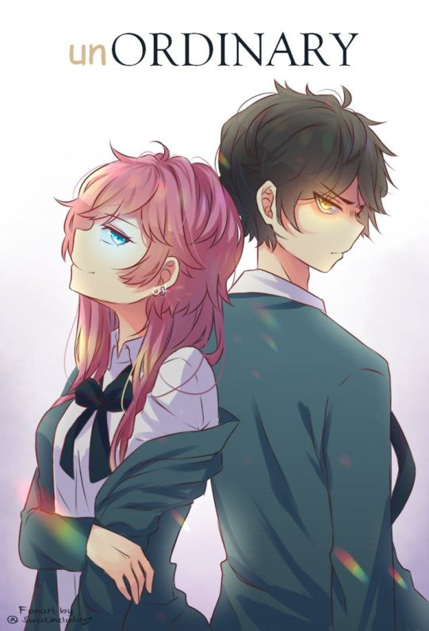
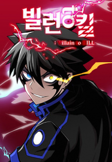
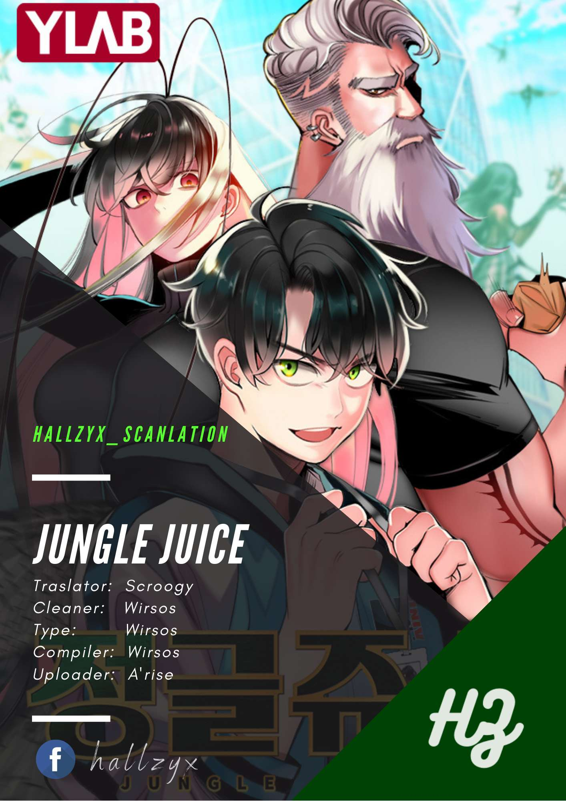

UnOrdinary
Synopsis
John vit dans un monde ordinaire où chacun est doté d'une capacité qui lui est propre. C'est une personne commune qui va dans une école ordinaire. Sauf que..... il est né avec rien... Mais dans une école où on est catalogué selon sa capacité et où les Supérieurs peuvent tout se permettre, comment réussira-t-il à survivre alors qu'il ne peut pas s’empêcher de venir en aide aux plus faibles ?!

Villain to kill
Synopsis
Cassien meurt après avoir été piégé pour le meurtre de son amis . Alors qu'il pensait que tout était fini pour lui, son âme est transférée dans le corps d'un jeune garçon... Un Psyker populaire et de première classe qui faisait l'envie de tous se transforme en méchant du jour au lendemain !

Jungle juice
Synopsis
Suchan Jang est un étudiant extraordinaire au sommet de la chaîne alimentaire sociale. Mais sous sa façade parfaite, il cache une paire d'ailes d'insectes qui ont soudainement poussé lorsqu'il a utilisé un mystérieux insectifuge appelé «Jungle Juice». La vie de Suchan s'effondre quand il montre ses ailes au monde pour sauver la vie de quelqu'un. Quand tout espoir semble perdu, Suchan tombe sur un monde caché d'humains insectes où chacun est accepté pour ce qu'il est. Mais la loi de la jungle régit cette société secrète et tous doivent se débrouiller seuls pour survivre.

The beginning after the end
Synopsis
Réincarné dans un nouveau monde rempli de magie et de monstres, le roi a une seconde chance de revivre sa vie en tant qu'Arthur Leywin, premier fils d'un modeste couple d'aventuriers pratiquant la magie.Corriger les erreurs de son passé ne sera cependant pas son seul défi. Sous la paix et la prospérité du nouveau monde se cache un courant sous-jacent qui menace de détruire tout ce pour quoi il a travaillé, remettant en question son rôle et la raison de sa nouvelle naissance.